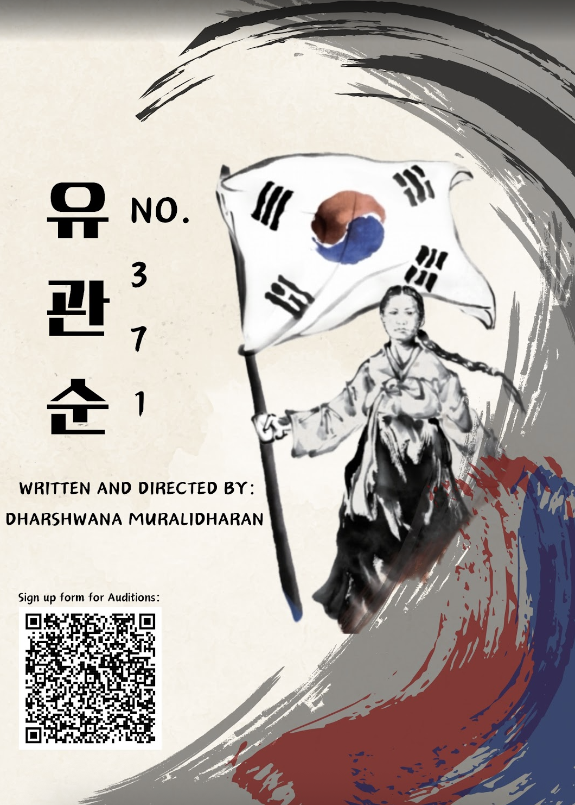
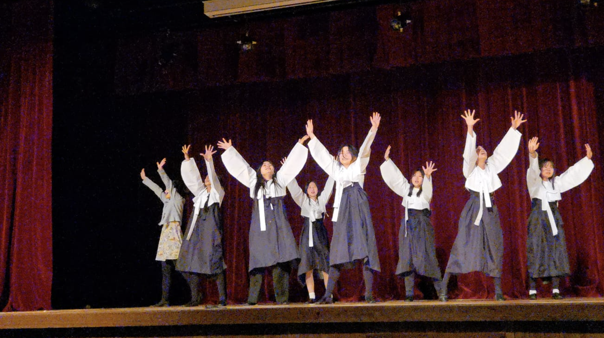
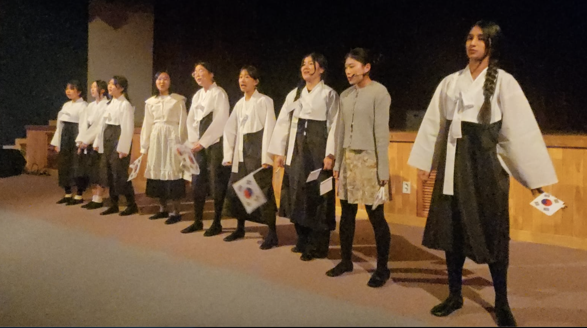
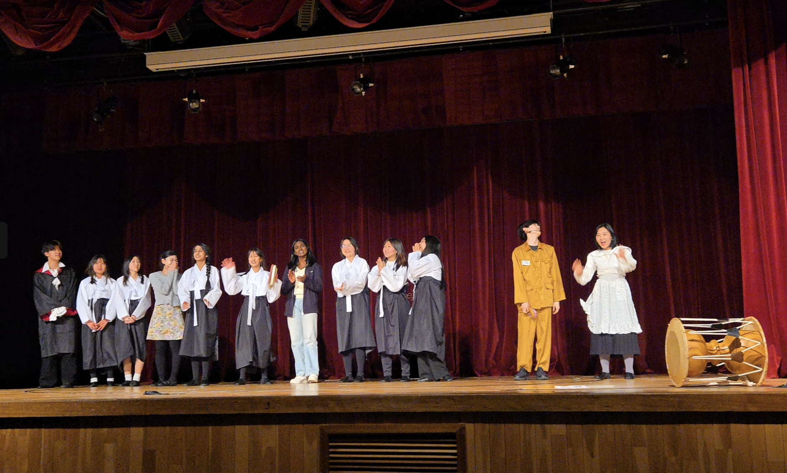

Yu Gwan Sun - A production from "Forgive nor Forgot"
March 2025
Throughout history, there has been bloodshed and violence, resulting in the deaths of innocent lives. However, as time moves on, moments of bravery and the pursuit of freedom are often washed away with the currents of time. Thus, that is why I started the theatre group, Forgive Not Forget. Through our plays, we strive not to forget the torrents of history, but rather to learn from our mistakes to create a brighter future for all. I wrote and directed the musical No. 371. No. 371 is the story of Yu Gwan Sun. A girl my age, who bravely fought against the Japanese, even when all the odds were against her. Her bravery and resistance are a testament that freedom must always be fought for till the very end. Moreover, I wanted to show all the brave hearts that beat as one through moments of bloodshed, trying to reclaim their country. To create a future where future generations could walk the Korean soil with the gift of freedom. The play was a rousing success thanks to the wonderful cast and crew. It was truly a memorable and inspiring experience.

Yu Gwan Poster Invite

A scene from the Yu Gwan San production

A scene from the Yu Gwan San production

Yu Gwan Closing